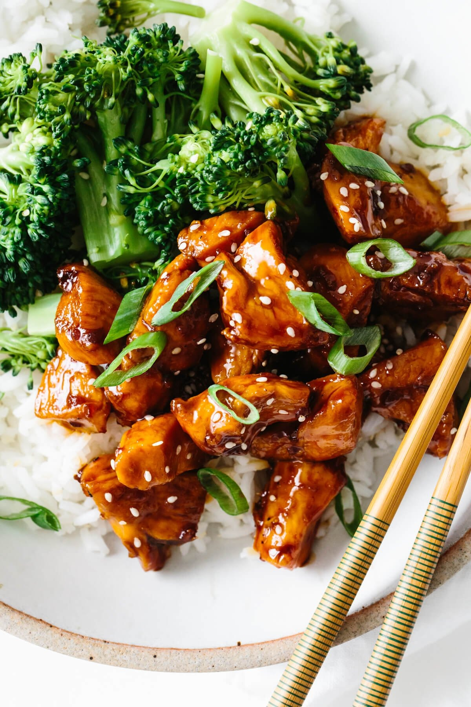

Teriyaki Chicken

Teriyaki is derived from the Japanese root words teri, to shine, and yaki, to broil or grill.
Thats the way traditional teriyaki looks: shiny and incised with grill marks. In Japan, teriyaki
is a mix of soy sauce, sake and the rice wine mirin, which imparts a subtle sweetness. The teriyaki
found throughout Seattle, of which this is an adaptation, is a bit more showy. Cooks sweeten with
white sugar and pineapple juice. They thicken with cornstarch. Ginger and garlic go into the mix
because of the Korean ancestry of many cooks. It is not at all traditional, but it is simple to
prepare and addictive to eat. Be sure to plan ahead as you do need to marinate the chicken before
cooking. An overnight stay in the fridge is ideal, but many readers have been happy with a quick
marinade of an hour or so.
Ingredients
- 1 cup soy sauce
- 1 cup granulated sugar
- 1.5 teaspoons brown sugar
- 6 cloves garlic(pressed)
- 2 tablespoons grated fresh ginger
- .25 teaspoon freshly ground black pepper
- 3-inch cinnamon stick
- tablespoon pineapple juice
- 8 skinless, boneless chicken thighs
- 2 tablespoons cornstarch
Directions
-
In a small saucepan, combine all ingredients except cornstarch and chicken. Bring to boil
over high heat. Reduce heat to low and stir until sugar is dissolved, about 3 minutes.
Remove from heat and let cool. Discard cinnamon stick and mix in .5 cup water.
-
Place chicken in a heavy-duty sealable plastic bag. Add soy sauce mixture, seal
bag, and turn to coat chicken. Refrigerate for at least an hour, ideally overnight.
-
Remove chicken and set aside. Pour mixture into a small saucepan. Bring to a boil over high
heat, then reduce heat to low. Mix cornstarch with 2 tablespoons water and add to pan. Stir
until mixture begins to thicken, and gradually stir in enough water (about .5 cup) until sauce
is the consistency of heavy cream. Remove from heat and set aside.
-
Preheat a broiler or grill. Lightly brush chicken pieces on all sides with sauce, and broil
or grill about 3 minutes per side. While chicken is cooking, place sauce over high heat and
bring to a boil, then reduce heat to a bare simmer, adding water a bit at a time to keep mixture
at a pourable consistency. To serve, slice chicken into strips, arrange on plates, and drizzle with sauce.